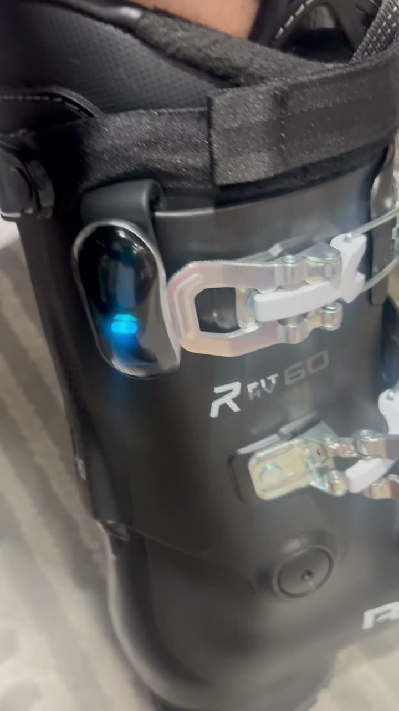
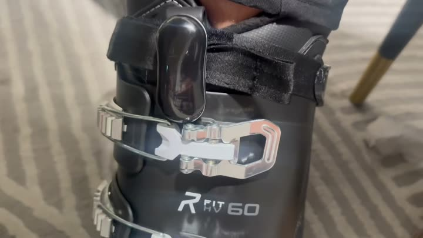

市面双板鞋梳理 × 绑带夹固定兼容性
2026-10-20 整理 · 覆盖 2025/26–2026/27 季在售款 · 113 个系列 / 17 个品牌 · 除视频里那双 Roxa 外都是按公开规格推断，没有上实物
结论
45系列 B 后侧大概率能装
（顶部是 35mm 以上魔术贴绑带）
53系列 B 后侧需实测
（凸轮/弹力绑带、鞋筒 BOA、窄绑带）
4系列两个位置都不行
（后开式 / 没有绑带）
0系列 A 前侧能直接说可以
（有扣就会被第一道扣环顶住）
- 双板鞋不是都一样。只有鞋底（跟固定器接触的部分）按 ISO 5355 / 9523 / 23223 统一；我们夹设备的鞋筒顶部绑带没有任何标准，宽度从 25mm 到 70mm，类型分魔术贴、弹力带+凸轮扣、爪扣三大类。
- B 后侧（外侧偏后）兼容面更广。大众/入门/租赁最常见的「4 扣 + 35–45mm 魔术贴」基本都能用，这正好是雪场租赁和初中级用户的主力。
- A 前侧普遍会被第一道扣的钢丝扣环挡住（视频已实测），三片式（Dalbello Cabrio、K2 FL3X、Scarpa Maestrale 等）正面是独立鞋舌，更不适合。
- 高端/竞赛款是主要风险：Tecnica Mach1/Cochise 的 Power Lock、Salomon S/Pro Alpha/Shift 的 50mm 爪扣、Atomic Redster 55mm 双段带、Lange RS 凸轮带、Salomon S/Race 65mm 都比魔术贴厚，夹子开口要按最厚的量。
- BOA 鞋大部分不受影响：多数 BOA 只把下壳的扣换成旋钮，鞋筒绑带保留；但 Dual BOA / 鞋筒 BOA（Atomic Hawx Ultra Dual BOA、Salomon Supra Dual BOA / Alpha C BOA、Head Kaliber BOA2、K2 Cortex Zonal、Nordica Speedmachine BOA DD/Cuff）鞋筒上有旋钮和钢缆，要看具体位置。
- 完全不行的：后开式（Nordica HF、迪卡侬 100 / Kid 100）和没绑带的儿童鞋（Salomon Team T2/T3）。
- 国内市场：国产品牌（Nobaday、Vector、GSOU SNOW 等）没查到双板硬壳鞋，国内双板鞋基本是上面这些国外品牌 + 迪卡侬。
各类鞋汇总
| 类别 | 系列数 | B 后侧 | A 前侧 |
|---|
| 大众 | 16 | 大概率可以 13 需实测 1 资料缺 2 | 需实测 14 资料缺 2 |
| 入门 | 6 | 大概率可以 5 资料缺 1 | 需实测 5 资料缺 1 |
| 进阶 | 23 | 大概率可以 8 需实测 14 资料缺 1 | 需实测 20 不行 2 资料缺 1 |
| 女款 | 3 | 大概率可以 2 需实测 1 | 需实测 3 |
| 混合/自由式 | 21 | 大概率可以 8 需实测 13 | 需实测 16 不行 5 |
| 竞赛 | 12 | 大概率可以 1 需实测 11 | 需实测 11 不行 1 |
| 登山 | 10 | 大概率可以 3 需实测 7 | 需实测 8 不行 2 |
| 儿童 | 14 | 大概率可以 2 需实测 6 不行 2 资料缺 4 | 需实测 7 不行 3 资料缺 4 |
| 租赁 | 6 | 大概率可以 3 资料缺 3 | 需实测 3 资料缺 3 |
| 后开式 | 2 | 不行 2 | 不行 2 |
视频实测：Roxa R/FIT HV 60（入门 4 扣）

B 后侧 能插到底
夹在顶部魔术贴绑带上，位置在鞋筒外侧偏后、第一道扣基座后面，平贴硬壳，上方没有东西挡。风险：侧摔可能压到；带行走扳手的鞋要确认不碰。

A 前侧 插不到底
夹在绑带正面偏外，设备下端顶在第一道扣的钢丝扣环上（群里说的"卡到铁圈"），开合扣具会碰到设备，扣环振动也会传进传感器。好处是正面摔不容易压到、看灯方便。
决定能不能装的 4 个因素
① 顶部绑带的类型和厚度- 魔术贴（35–45mm）：跟视频那双一样，最好夹
- 弹力带 + 凸轮扣 / 爪扣（Booster、Power Lock、Claw）：更厚，扣头本身也占位置
- 30mm 及以下（儿童鞋）：夹子可能晃
- 没有绑带：夹不了
② 第一道扣（鞋筒最上面那道）的位置- 决定 A 前侧能不能插到底：要量「绑带下沿 → 扣环」的距离
- B 后侧在扣具基座后面，一般不受影响
③ 鞋筒上的 BOA 旋钮 / 钢缆- 单 BOA 多在下壳，不影响
- Dual BOA、Cuff BOA 鞋筒上有旋钮；公开资料都没写在外侧还是内侧，要看实物
④ 鞋筒结构- 两片重叠（主流）：正常
- 三片式：正面是独立鞋舌，A 不行，B 可以
- 后开式：鞋筒后半是掀开的盖板，都不行
- 行走模式：扳手多在后背正中，B 一般不碰；Fischer Ranger 扳手做在第一道扣上、Roxa R3 绑带扣参与行走、Dynafit Hoji 绑带由钢缆拉紧，要实测
全部系列（116 行）
| 品牌 / 系列 | 类别 | 结构 | 扣具 | 顶部绑带 | 行走 | B 后侧 | A 前侧 | 楦宽 / 硬度 / 价格 |
|---|
建议借来实测的鞋（按优先级）
- 雪场租赁鞋（Head Edge LYT RX、Tecnica Mach Sport RT、Rossignol Evo/Alltrack Rental、Lange RX RTL、Nordica Sportmachine R）：量最大，也最可能被第一次用的人穿。国内租赁鞋公开资料很少，建议去合作雪场租赁点拍一圈。
- Tecnica Mach1 / Cochise（45mm Power Lock 弹力带）和 Salomon S/Pro Alpha（50mm 爪扣）：进阶用户最常见的两种厚绑带。
- Dual BOA：Salomon S/Pro Supra Dual BOA 或 Atomic Hawx Ultra Dual BOA，看鞋筒旋钮在哪一侧。
- 三片式：Dalbello Cabrio MV 或 K2 FL3X Method，验证 B 后侧是否正常、A 前侧鞋舌晃动有多大。
- 带行走模式：Lange XT3 Free、Fischer Ranger、Atomic Hawx Prime XTD。
- 儿童鞋：Atomic Hawx Kids / Head Raptor JR（30mm 绑带）。
每双鞋记录：绑带宽度和厚度、绑带下沿到第一道扣环的距离、设备能否插到底、压鞋/拍打时是否晃动。夹子开口宽度和最大插入深度需要硬件给出，才能跟上面的绑带数据一一对比。
数据说明
- 规格来自品牌官网、evo、Blister、Realskiers、零售商页面等（每行「原始资料」里有链接）；部分网站限流，有些值来自搜索摘要。查不到的写「未查到」，没有补猜。
- BOA 旋钮在鞋外侧还是内侧，所有公开资料都没写，只能确认在下壳还是鞋筒。
- 品牌变化：Full Tilt 已并入 K2 FL3X；Dalbello Krypton/Panterra 2026 起改名 Cabrio LV/MV；Scott 已停产雪鞋；Blizzard 的鞋以 Tecnica 名义销售；Elan 只有儿童鞋；Zipfit 只做内胆（未列入）。灰色行是历史款/停产/参考行，不计入统计。
- 判定规则：B = 顶部绑带是 35mm 以上魔术贴且鞋筒上没有 BOA 旋钮 → 大概率可以；凸轮/弹力/爪扣绑带、30mm 以下、鞋筒 BOA、行走机构贴近 → 需实测；后开或无绑带 → 不行。A = 有扣的鞋一律需实测（扣环会顶），三片式/后开/无绑带 → 不行。